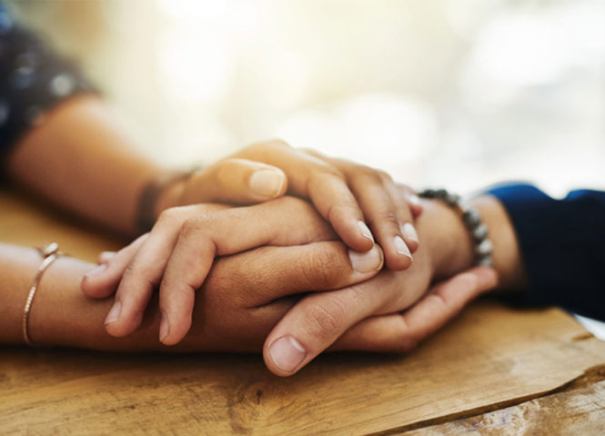

Empowering those who grieve to rebuild their lives through understanding, compassion, and community.
Find solace and support in our facilitated groups. Share your journey with others who understand, and discover tools for healing.

Equip yourself and your organization with the skills to navigate grief. We offer tailored education programs.
"After losing my husband, I felt so alone. The support group helped me find strength I didn't know I had."— Sarah, Group Participant
"The grief education workshop gave me tools to support my children through their loss."— Michael, Workshop Attendee
"I found understanding and acceptance here that I couldn't find anywhere else."— Emma, Support Group Member
As a non-profit, we rely on community generosity to provide vital grief support. Join us in making a difference.
We are a registered charity dedicated to supporting those who have experienced the death of a significant person. We provide a non-judgmental and compassionate environment.
Please consider a donation or volunteering.